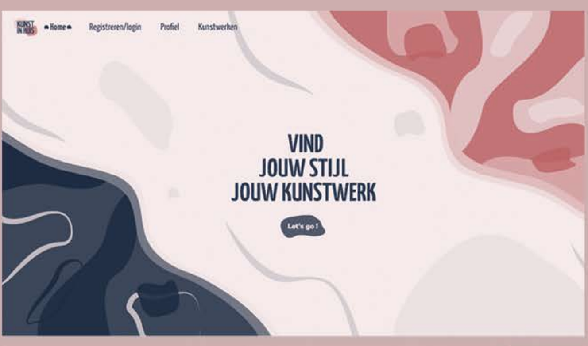

space history
Description
A concise yet captivating one-minute animation unfolds, illustrating the rich narrative of space exploration.
With engaging 3D animations showcasing planets and a dynamic timeline charting the course of history, the video not only serves as a brief summary of space exploration but also seeks to ignite inspiration for future cosmic journeys.
kunst in huis
Description
"Kunst in huis" is a service where you can buy or rent paintings. As part of the school project, our goal is to enhance their image,
portraying them in a way that allows the brand to be more authentic. I aim to create visuals that are softer to reflect and better showcase their works of art.
brussels
Description
This is a project that aimed to promote the culture of Brussels, as part of a school project. With the main goal, share our culture.
The concept revolves around the human senses—sight, touch, and smell. This idea was translated into a small campaign featuring a website and posters strategically placed throughout the city to engage and captivate the audience.

drone lake
Description
This is a lake designed to absorb all the water during heavy storms. It has a specific function that allows it to triple its volume.
As a project, I decided to narrate its story by filming drone shots, showcasing and sharing its utility.
prototype glitch
Description
This prototype was created with the goal of learning a new technology. Here, the objective was to replace the screen of my phone.
Track HUD elements on it, all that using After Effects and Mocha.